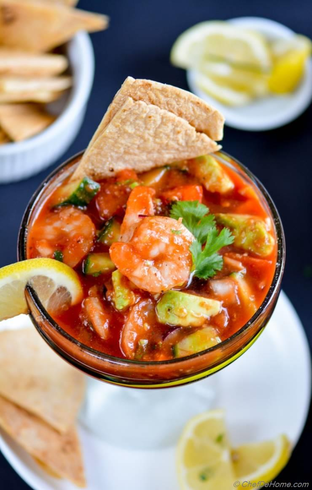

Shrimp Cocktail

Mexican Shrimp Cocktail
This is the Mexican variant of the shrimp cocktail. A dish found in beach destinations.
Easy to make, it is a favorite of locals and tourists alike.
Ingredients
- Shrimp or prawns
- Ketchup
- Lime or Lemon juice
- Cilantro
- Avocados
- Tomato
- Onion
- Green chili
- Vinegar
- Hot Sauce
- Fanta soda
- Salted crackers or totopos
Steps
- Cut the shrimp in half inch pieces.
- Dice the tomato, onion, cilantro, avocados and chili peppers.
- Mix this all with the ketchup, lime juice, vinegar, hot sauce, and Fanta soda.
- Serve in a fancy cup
- Enjoy with the crackers or totopos